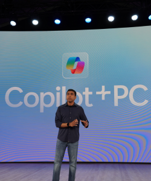

Programação Web I
|
Microsoft - Abrindo Janelas |
Desenvolvimento de Sistemas Programação Web I |
||
| Home | Criação | Windows | Cadastro | Créditos |
|
Investimentos em IA e Infraestrutura
A Microsoft anunciou planos de investir US$ 80 bilhões em data centers habilitados para IA no ano fiscal de 2025, com mais da metade desse valor direcionado aos Estados Unidos. A empresa destaca que esses investimentos são essenciais para suportar a inovação e aplicação da inteligência artificial, especialmente após o lançamento do ChatGPT em 2022. Em parceria com a BlackRock, a Microsoft busca captar até US$ 30 bilhões para financiar a construção de data centers e infraestrutura energética necessários para suportar a expansão de projetos de IA. O Copilot vem sendo a principal aposta de IA da Microsoft nos "chatbots", onde foi criado como uma continuação dos descontinuados Bing Chat e da Cortana do Windows 10. |
 | |||
|
Compromissos e Expansão Global
Diante de tensões transatlânticas, a Microsoft anunciou uma expansão de 40% em sua capacidade de data centers na Europa, planejando operar em 16 países e investir bilhões de dólares anualmente. |
||||
|
Computação e Tecnologia Quântica
A Microsoft apresentou o Majorana 1, o primeiro chip quântico com uma nova arquitetura de núcleo topológico, utilizando partículas de Majorana para produzir qubits mais confiáveis e escaláveis. A Microsoft visualiza um futuro na qual a computação quântica, combinada com a IA, permitirá que empresas e cientistas projetem produtos e soluções de forma mais eficiente, reduzindo anos de tentativa e erro e com potencial de revolucionar diversas áreas. |
||||